加達湖位於義大利的北部、阿爾卑斯山南麓，是義大利境內最大的湖泊，坐落於威尼斯和米蘭之間
是冰河時期結束所遺留下來的冰蝕湖，湖的形狀是狹長型，南北長52公里，東西寬18公里。
今天拜訪的是一座深入湖中半島上的小城鎮 西米歐尼(Sirmione)
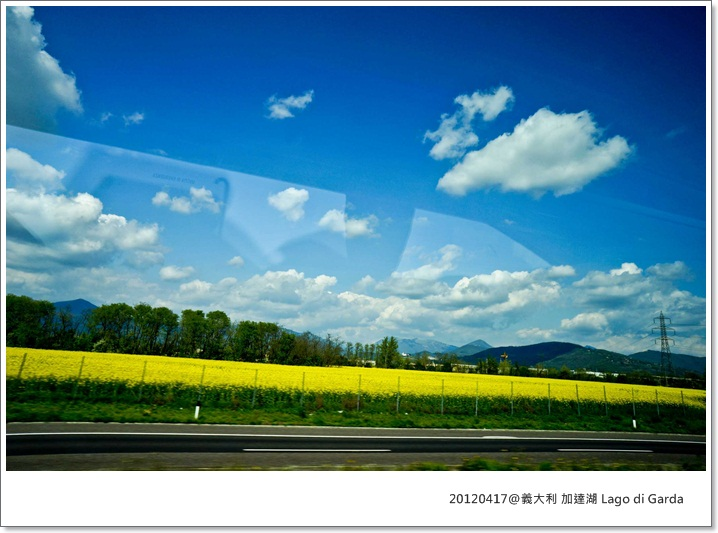
除了觀光景點，義大利每個角落的景色也都很有看頭，幾乎大家上車就開始補眠
我真的是捨不得放過這些美景，一路上就多吞幾粒暈車藥，堅持Hold住不休息 XD
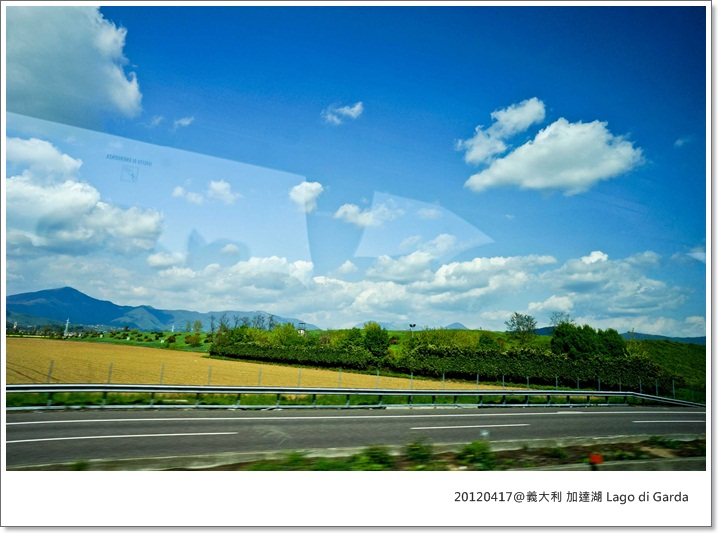
車子開到停車場要步一大約10分鐘才會到達小城鎮
老丹說有自費的遊湖行程，但我們覺得在湖畔欣賞就夠值回票價了，時間留著探索這個小鎮
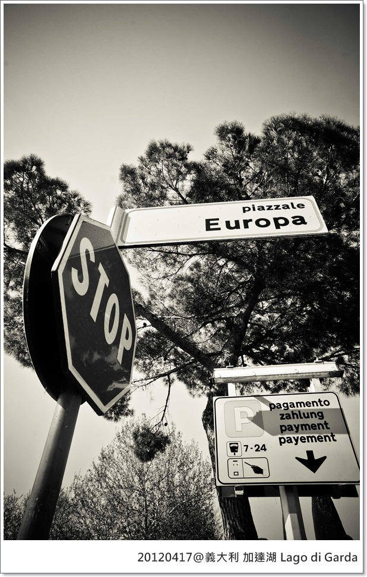
居然又是小朋友戶外教學的地點......
蛤子們，你們好幸福啊～
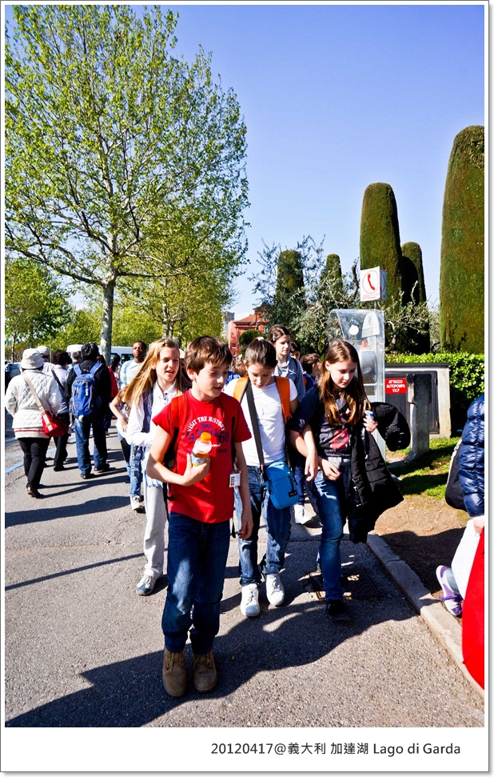
今天又獲得一個晴空萬里的好天氣，雖然有陽光但吸吐著仍然是冰冷的空氣這是我最喜歡的天氣！
乾淨的街道，悠閒步行十分鐘就來到西米歐尼這個湖邊小鎮
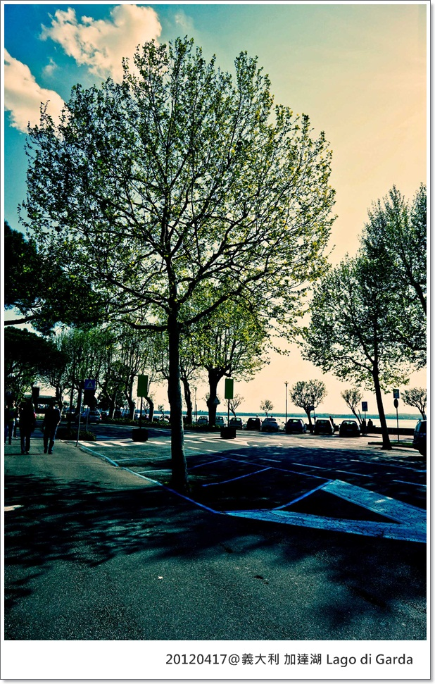
那個真的沒照片可放了，不好意思，就閃一下吧！XD

史卡利傑家族城堡(The Scaliger Castle of Sirmione)，是該家族在十三世紀統治維諾納(Verona)地區時所興建的
用來抵禦統治鄰區倫巴底(Lombardia)的維斯康提家族(Visconti)侵略，在西米歐尼小鎮旁的只是其中一座。
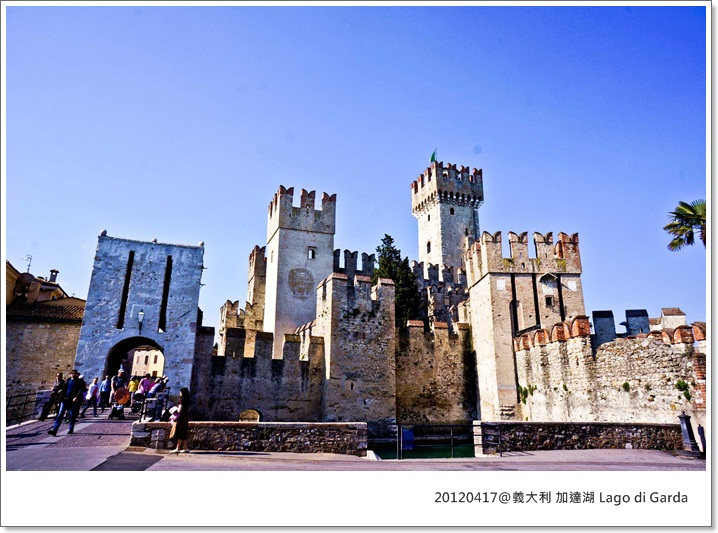
要穿越過旁邊的護城河上的橋這才算進到小鎮裡
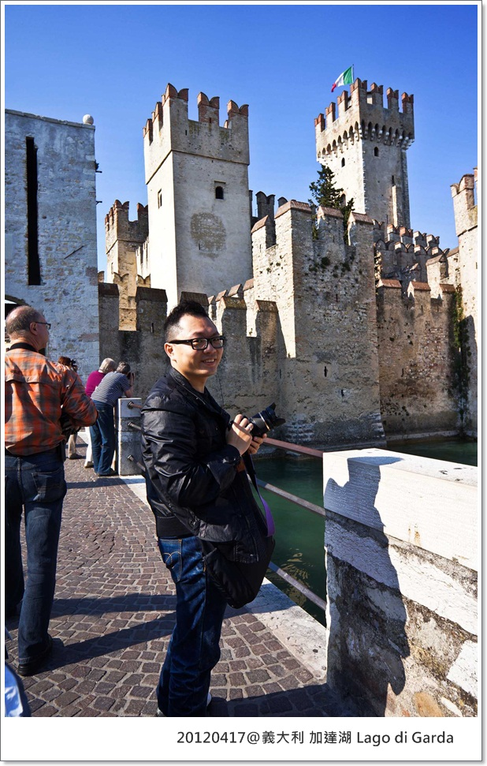
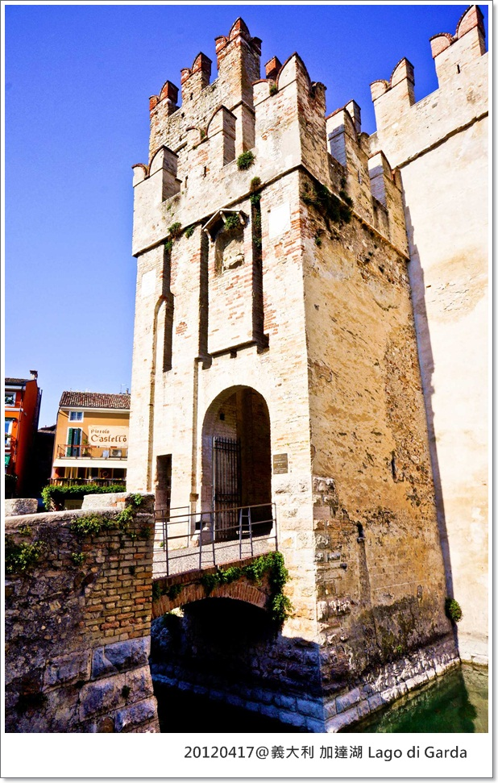  ＿
＿
遊客非常的多，這裡也是相當有名的渡假聖地，還有非常好吃的冰淇淋
這裡冰淇淋店家大概每10公尺就有一間吧！店員熱情又親切，還幫我特寫了好多張特別口味
(這下只能用想像了,各位)
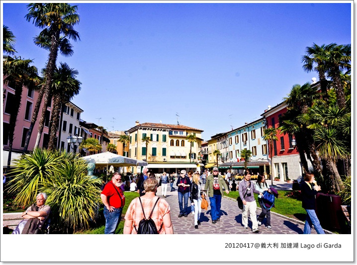
湖畔景色，如果有錢我一定每年都來這渡假，躺著不動都爽快
 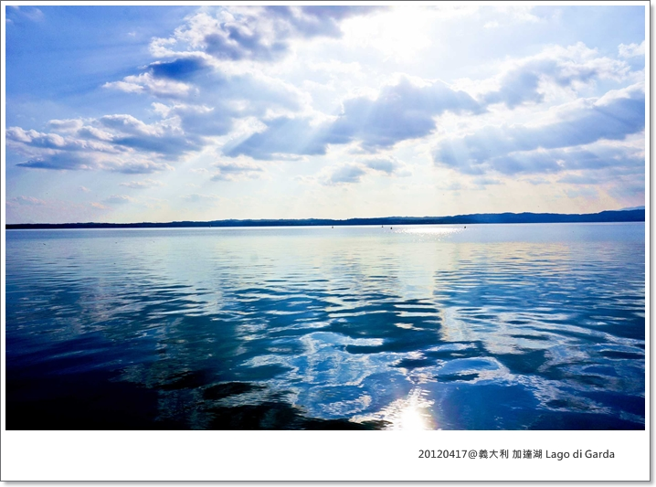
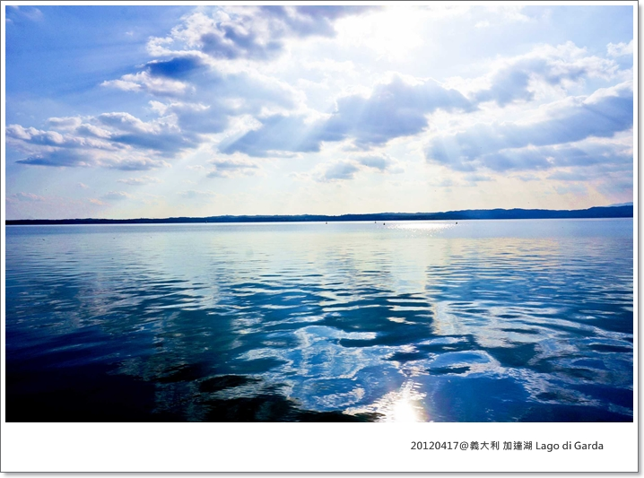
私人遊艇(?)
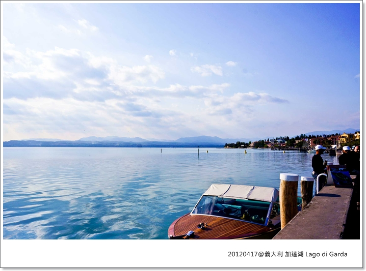
MOTHER'S FINGER
我真的很喜歡呼吸著冰冷的空氣，還能享受陽光的天氣啊～
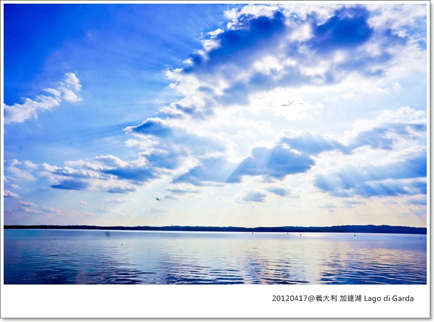
西米歐尼(Sirmione)的明信片，雖然這很美，但我想我朋友可能也不太知道是那? 哈 所以沒有寄這兒的給他們
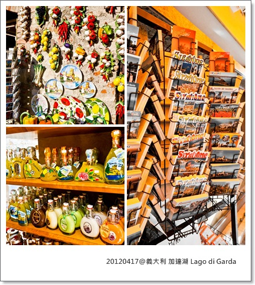
來那麼多天終於看到狗狗了(誤)
誰可以幫我解答義大利街上為什麼一隻狗狗都沒有? 他們不養狗? 還是狗都不帶出門?
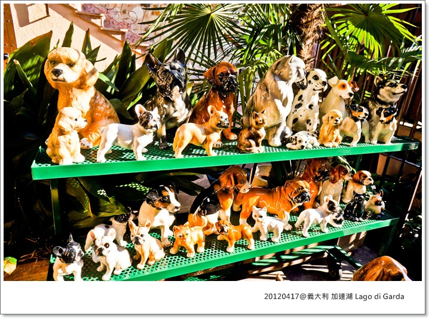
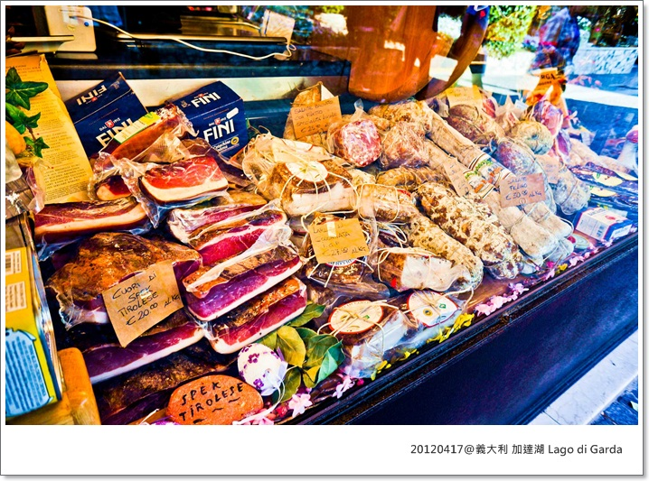
其實這天我有拍到一個超級帥哥說，大概像Brad Pitt那種等級，不誇張！
我跟蹤他好長一段路，猛哥才拍到滿意的正面照片
(所以500D被綁票的時候，猛哥第一個念頭居然是可惜帥哥照沒了!! 笑噴!!!)
反正現在說什麼都沒用了，沒圖沒真相啊啊啊啊啊
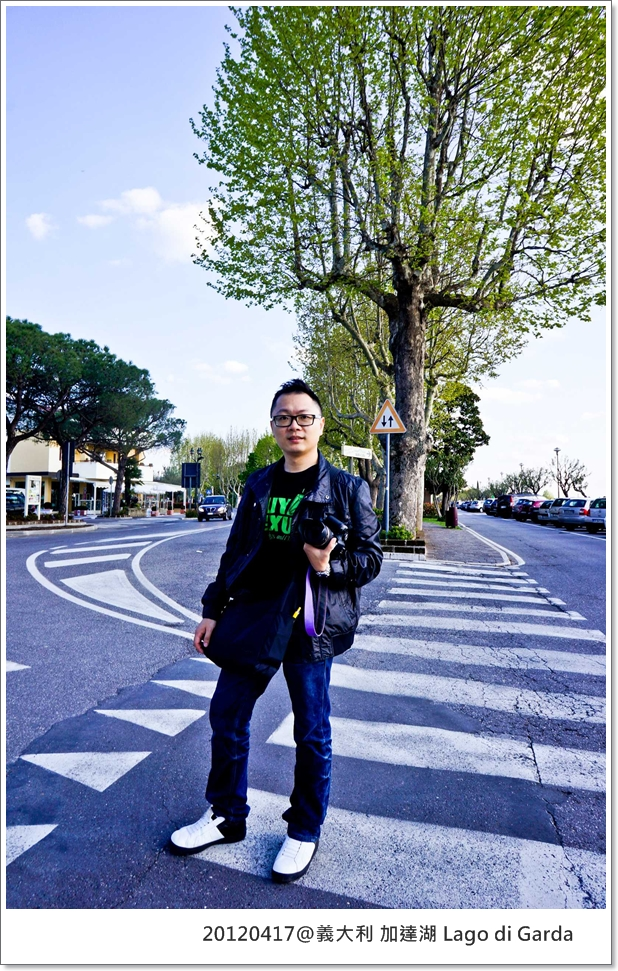

結束今天行程，今天要住在Verona
下一篇，即將公開我家500D被綁票的可怕事件
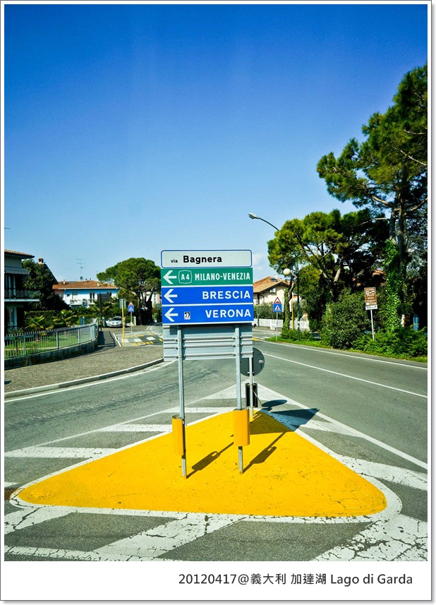
 歐洲冒險 MK義大利蜜月系列
歐洲冒險 MK義大利蜜月系列